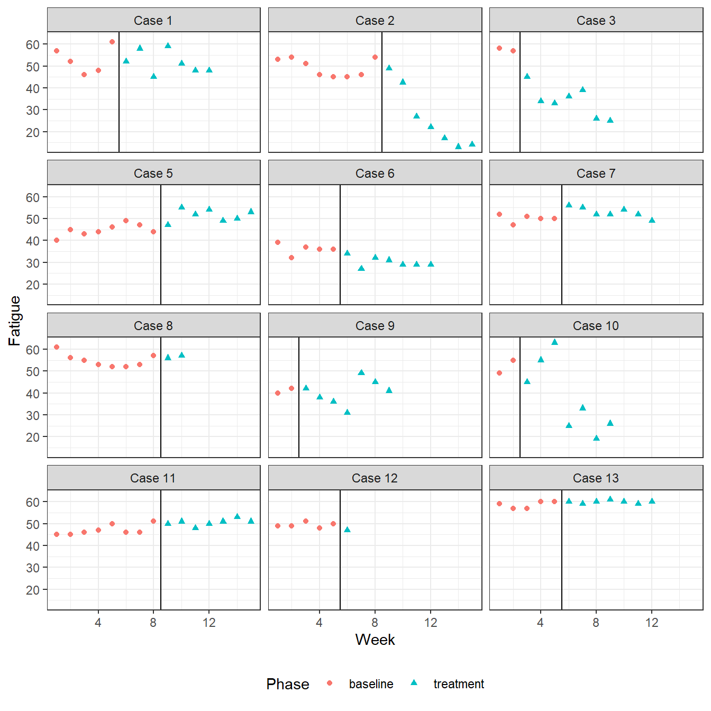

vignettes/Estimating-effect-sizes.Rmd
Estimating-effect-sizes.RmdThe scdhlm package (Pustejovsky, 2016) provides several methods for estimating design-comparable standardized mean differences (SMDs) based on data from a single-case design. A design-comparable SMD is in the same metric as the SMD from a simple, between-groups randomized experiment performed on a comparable sample and with comparable outcome measures. Hedges, Pustejovsky, and Shadish (2012) proposed methods for estimating design-comparable SMDs based on data from an ABAB design (and, more generally, treatment reversal designs with an arbitrary number of phases); Hedges, Pustejovsky, and Shadish (2013) extended the methods to handle data from multiple baseline designs. In both cases, the proposed estimation methods are premised on a simple model for the data, which assumed that the outcome process is stable over time (lacking time trends) and that the treatment effect is constant across cases. Pustejovsky, Hedges, and Shadish (2014) proposed an approach to defining and estimating design-comparable SMDs under a more general model, which can allow for time trends and between-case variability.
The original estimation methods proposed for the ABAB design and multiple baseline design are implemented in the effect_size_ABk and effect_size_MB functions, respectively. Both of these functions take the raw data as input and produce as output an effect size estimate, along with accompanying standard error and some other auxiliary information. Thus, there is no distinction between estimating the model and estimating the effect size. In contrast, the more general methods proposed in Pustejovsky, Hedges, and Shadish (2014) entail two steps: first, estimating a hierarchical model for the data; second, estimating a design-comparable effect size based on the fitted model. The first step is accomplished using the function lme from the package nlme by Pinheiro, Bates, DebRoy, and Sarkar (2015). The second step is accomplished using the function g_REML from the scdhlm package. This vignette demonstrates how to use all of these functions to estimate design-comparable standardized mean difference effect sizes. The R presented below can be used to replicate the examples found in the papers that proposed the methods. To begin, the user must load the package:
library(scdhlm)
Lambert, Cartledge, Heward, and Lo (2006) tested the effect of using response cards (compared to single-student responding) during math lessons in two fourth-grade classrooms. The investigators collected data on rates of disruptive behavior for nine focal students, using an ABAB design. This example is discussed in Hedges, Pustejovsky, and Shadish (2012), who selected it because the design was close to balanced and used a relatively large number of cases. Their calculations can be replicated using the effect_size_ABk function. To use this function, the user must provide five pieces of data:
In the Lambert dataset, these variables are called respectively outcome, treatment, case, phase, and time. Given these inputs, the design-comparable SMD is calculated as follows:
data(Lambert) Lambert_ES <- effect_size_ABk(outcome = outcome, treatment = treatment, id = case, phase = phase, time = time, data = Lambert) str(Lambert_ES)
## List of 12
## $ M_a : int [1:2, 1:2] 6 4 6 7
## ..- attr(*, "dimnames")=List of 2
## .. ..$ : chr [1:2] "SSR" "RC"
## .. ..$ : chr [1:2] "1" "2"
## $ M_dot : int 23
## $ D_bar : num -5.46
## $ S_sq : num 4.67
## $ delta_hat_unadj: num -2.52
## $ phi : num 0.225
## $ sigma_sq_w : num 4.53
## $ rho : num 0.0299
## $ theta : num 0.145
## $ nu : num 164
## $ delta_hat : num -2.51
## $ V_delta_hat : num 0.0405
## - attr(*, "class")= chr "g_HPS"The function produces a list containing the estimated effect size estimate, an estimate of its variance, and several pieces of auxiliary information. The effect size estimate is stored in the list entry called delta_hat, which in this example is equal to -2.5130728; its variance is stored in V_delta_hat, which in this example is equal to 0.0405462. The effect size estimate is bias-corrected in a manner analogous to the correction in Hedges’ g for SMDs from a between-subjects design. The degrees of freedom are estimated based on a Satterthwaite-type approximation and are stored in the entry nu (equal to 164.4922707 in this example).
By default, the effect_size_ABk function calculates an estimate of the first-order autocorrelation in the outcome series (stored in the entry phi) and an estimate of the intra-class correlation, i.e., the ratio of the between-case variance in the outcome to the total cross-sectional variance in the outcome (the intra-class correlation estimate is stored in the entry rho). Optionally, the user can specify their own estimates of these parameters as inputs to the function. In this example, the auto-correlation estimated was 0.2246802. The following code examines the sensitivity of the results to values of the auto-correlation that are larger and smaller than the default estimate of 0.2246802.
effect_size_ABk(outcome = outcome, treatment = treatment, id = case, phase = phase, time = time, data = Lambert, phi = 0.10)[c("delta_hat","V_delta_hat","nu")]
## $delta_hat
## [1] -2.512654
##
## $V_delta_hat
## [1] 0.03718948
##
## $nu
## [1] 158.7306effect_size_ABk(outcome = outcome, treatment = treatment, id = case, phase = phase, time = time, data = Lambert, phi = 0.35)[c("delta_hat","V_delta_hat","nu")]
## $delta_hat
## [1] -2.512171
##
## $V_delta_hat
## [1] 0.04661506
##
## $nu
## [1] 152.5748The estimated auto-correlation has only a trivial effect on the effect size estimate and a minor effect on its estimated variance.
Anglesea, Hoch, and Taylor (2008) used an ABAB design to test the effect of using a pager prompt to reduce the rapid eating of three teenage boys with autism. The primary outcome was a measure of how quickly each participant consumed one serving of a familiar food. This example is discussed in Hedges, Pustejovsky, and Shadish (2012), who used it to illustrate the calculation of the design-comparable SMD when based on the minimum required number of cases. Their calculations can be replicated using the following code:
data(Anglesea) Anglesea_ES <- effect_size_ABk(outcome, condition, case, phase, session, data = Anglesea) Anglesea_ES[c("delta_hat","V_delta_hat","nu")]
## $delta_hat
## [1] 1.149507
##
## $V_delta_hat
## [1] 2.439564
##
## $nu
## [1] 2.340135Note that the variance of the effect size estimate is quite large and the degrees of freedom corresponding to the denominator of the SMD estimate are very low. Both quantities are extreme due to the small number of cases used in this example.
Saddler, Behforooz, and Asaro (2008) used a multiple baseline design to investigate the effect of an instructional technique on the writing of fourth grade students. The investigators assessed the intervention’s effect on measures of writing quality, sentence complexity, and use of target constructions.
Design-comparable SMDs can be estimated based on these data using the effect_size_MB function. The syntax for this function is similar to that of the effect_size_ABk function, but does not require the user to input information about the phase of the design (because in the multiple baseline design, phase exactly corresponds to treatment condition). The following code replicates the calculations reported in Hedges, Pustejovsky, and Shadish (2013):
data(Saddler) quality_ES <- effect_size_MB(outcome, treatment, case, time, data = subset(Saddler, measure=="writing quality")) complexity_ES <- effect_size_MB(outcome, treatment, case, time , data = subset(Saddler, measure=="T-unit length")) construction_ES <- effect_size_MB(outcome, treatment, case, time, data = subset(Saddler, measure=="number of constructions")) data.frame( quality = unlist(quality_ES), complexity = unlist(complexity_ES), construction = unlist(construction_ES) )[c("delta_hat","V_delta_hat","nu","phi","rho"),]
## quality complexity construction
## delta_hat 1.96307272 0.78540043 0.74755356
## V_delta_hat 0.33491289 0.08023320 0.07847359
## nu 8.91814603 9.60204004 7.57981360
## phi 0.09965017 -0.07542229 -0.11159420
## rho 0.63321198 0.61453091 0.73123744For multiple baseline designs, an alternative to using the effect_size_MB function is to estimate a hierarchical linear model for the data and then use the g_REML function. The two alternative approaches differ in how the model parameters and effect size are estimated. Pustejovsky, Hedges, and Shadish (2014) found that the latter approach (based on a hierarchical linear model) has comparable mean-squared error to the former approach, while producing better estimates of the variance of the effect size. The latter approach is implemented in two steps, which will be demonstrated using the writing quality measure. First, estimate the hierarchical model with an AR(1) within-case error structure using the lme function:
quality_RML <- lme(fixed = outcome ~ treatment, random = ~ 1 | case, correlation = corAR1(0, ~ time | case), data = subset(Saddler, measure=="writing quality")) summary(quality_RML)
## Linear mixed-effects model fit by REML
## Data: subset(Saddler, measure == "writing quality")
## AIC BIC logLik
## 97.31383 105.6316 -43.65692
##
## Random effects:
## Formula: ~1 | case
## (Intercept) Residual
## StdDev: 0.6621631 0.6656806
##
## Correlation Structure: ARMA(1,0)
## Formula: ~time | case
## Parameter estimate(s):
## Phi1
## 0.3819756
## Fixed effects: outcome ~ treatment
## Value Std.Error DF t-value p-value
## (Intercept) 2.437206 0.3187517 34 7.646094 0
## treatmenttreatment 2.181029 0.2340101 34 9.320237 0
## Correlation:
## (Intr)
## treatmenttreatment -0.308
##
## Standardized Within-Group Residuals:
## Min Q1 Med Q3 Max
## -1.4700055 -0.4627404 -0.1907942 0.4286209 1.8063844
##
## Number of Observations: 41
## Number of Groups: 6The summary of the fitted model displays estimates of the component parameters, including the within-case and between-case standard deviations, auto-correlation, and (unstandardized) treatment effect estimate. The next step is to combine these estimated components into an effect size estimate using the g_REML function. This function takes the fitted lme model object as input, followed by the vectors p_const and r_const, which specify the components of the fixed effects and variance estimates that are to be used in constructing the design-comparable SMD. For details on how to choose these constants, see Pustejovsky, Hedges, and Shadish (2014). In this example:
quality_ES_RML <- g_REML(quality_RML, p_const = c(0,1), r_const = c(1,0,1), returnModel=FALSE) str(quality_ES_RML)
## List of 14
## $ p_beta : num 2.18
## $ r_theta : num 0.882
## $ delta_AB : num 2.32
## $ nu : num 12
## $ kappa : num 0.249
## $ g_AB : num 2.17
## $ V_g_AB : num 0.311
## $ cnvg_warn: logi FALSE
## $ sigma_sq : num 0.443
## $ phi : num 0.382
## $ Tau : Named num 0.438
## ..- attr(*, "names")= chr "case.var((Intercept))"
## $ I_E_inv : num [1:3, 1:3] 0.0236 0.0253 -0.0104 0.0253 0.0528 ...
## $ p_const : num [1:2] 0 1
## $ r_const : num [1:3] 1 0 1
## - attr(*, "class")= chr "g_REML"The function returns a list containing the SMD effect size estimate (g_AB = 2.1741543), its variance (V_g_AB = 0.3106349), the estimated auto-correlation (phi = 0.3819756), estimated degrees of freedom (nu = 11.9634199), and several other pieces of auxiliary information. In this example, the RML effect size estimate is about 10% larger than the estimate from effect_size_MB, with a slightly smaller variance estimate. The RML estimate of the auto-correlation is substantially higher than before, but effect_size_MB uses a moment estimator that is known to be biased towards zero and that does not perform well when outcomes are intermittently missing for some sessions (as is the case here).
Laski, Charlop, and Schreibman (1988) used a multiple baseline across individuals to evaluate the effect of a training program for parents on the speech production of their autistic children, as measured using a partial interval recording procedure. The design included \(m = 8\) children; one child was measured separately with each parent; for purposes of simplicity, and following Hedges, Pustejovsky, and Shadish (2013), only the measurements taken with the mother are included in the analysis.
The following code compares the estimates of the design-comparable SMD effect size based on the Hedges, Pustejovsky, and Shadish (2013) approach (using the effect_size_MB function) to the estimates based on the hierarchical linear modeling approach described in Pustejovsky, Hedges, and Shadish (2014) (using the g_REML function).
data(Laski) # Hedges, Pustejovsky, & Shadish (2013) Laski_ES_HPS <- effect_size_MB(outcome, treatment, case, time, data= Laski) # Pustejovsky, Hedges, & Shadish (2014) Laski_RML <- lme(fixed = outcome ~ treatment, random = ~ 1 | case, correlation = corAR1(0, ~ time | case), data = Laski) summary(Laski_RML)
## Linear mixed-effects model fit by REML
## Data: Laski
## AIC BIC logLik
## 1048.285 1062.466 -519.1424
##
## Random effects:
## Formula: ~1 | case
## (Intercept) Residual
## StdDev: 15.68278 13.8842
##
## Correlation Structure: AR(1)
## Formula: ~time | case
## Parameter estimate(s):
## Phi
## 0.252769
## Fixed effects: outcome ~ treatment
## Value Std.Error DF t-value p-value
## (Intercept) 39.07612 5.989138 119 6.524498 0
## treatmenttreatment 30.68366 2.995972 119 10.241637 0
## Correlation:
## (Intr)
## treatmenttreatment -0.272
##
## Standardized Within-Group Residuals:
## Min Q1 Med Q3 Max
## -2.72642154 -0.69387388 0.01454473 0.69861200 2.14528141
##
## Number of Observations: 128
## Number of Groups: 8Laski_ES_RML <- g_REML(Laski_RML, p_const = c(0,1), r_const = c(1,0,1), returnModel=FALSE) # compare the estimates data.frame( HPS = with(Laski_ES_HPS, c(SMD = delta_hat, Variance = V_delta_hat, phi = phi, rho = rho, nu = nu)), RML = with(Laski_ES_RML, c(g_AB, V_g_AB, phi, Tau / (Tau + sigma_sq), nu)) )
## HPS RML
## SMD 1.38838504 1.40488723
## Variance 0.10050132 0.08198192
## phi 0.01652579 0.25276905
## rho 0.69396648 0.56060636
## nu 13.10041496 18.55240610As in the Saddler example, both methods produce very similar SMD estimates and variance estimates. The RML estimate of auto-correlation is substantially higher than the HPS estimate, while the intra-class correlation estimate is somewhat lower; in combination, these differences lead to larger degrees of freedom.
An advantage of the RML approach is that it is readily extended to more complex models. The above analysis was based on the assumption that the treatment effect is constant across cases. This assumption can be removed by fitting a model that includes a random treatment effect for each case.
Laski_RML2 <- lme(fixed = outcome ~ treatment, random = ~ treatment | case, correlation = corAR1(0, ~ time | case), data = Laski) summary(Laski_RML2)
## Linear mixed-effects model fit by REML
## Data: Laski
## AIC BIC logLik
## 1036.014 1055.868 -511.0069
##
## Random effects:
## Formula: ~treatment | case
## Structure: General positive-definite, Log-Cholesky parametrization
## StdDev Corr
## (Intercept) 21.79581 (Intr)
## treatmenttreatment 13.24108 -0.869
## Residual 11.94109
##
## Correlation Structure: AR(1)
## Formula: ~time | case
## Parameter estimate(s):
## Phi
## 0.02267299
## Fixed effects: outcome ~ treatment
## Value Std.Error DF t-value p-value
## (Intercept) 38.45243 7.881197 119 4.879008 0
## treatmenttreatment 31.59161 5.178366 119 6.100691 0
## Correlation:
## (Intr)
## treatmenttreatment -0.835
##
## Standardized Within-Group Residuals:
## Min Q1 Med Q3 Max
## -3.12357773 -0.50574784 -0.01605527 0.65004147 2.05388331
##
## Number of Observations: 128
## Number of Groups: 8anova(Laski_RML, Laski_RML2)
## Model df AIC BIC logLik Test L.Ratio p-value
## Laski_RML 1 5 1048.285 1062.466 -519.1424
## Laski_RML2 2 7 1036.014 1055.868 -511.0069 1 vs 2 16.27091 3e-04The fit of the two models can be compared using a likelihood ratio test, which rejects the model with a constant treatment effect. The second model, which allows the treatment effect to vary, is to be preferred. The following code estimates a design-comparable SMD based on the better-fitting model.
Laski_ES_RML2 <- g_REML(Laski_RML2, p_const = c(0,1), r_const = c(1,0,1,0,0), returnModel=FALSE) Laski_ES_RML2[c("g_AB","V_g_AB","phi","nu")]
## $g_AB
## [1] 1.180586
##
## $V_g_AB
## [1] 0.1284279
##
## $phi
## [1] 0.02267299
##
## $nu
## [1] 10.7755The effect size estimate that is 16% smaller than the estimate from the simpler model; with a standard error that is 25% larger. The difference between the two models is due to a difference in between-case variance across phases not captured by the assumptions of the simpler model. The between-case variation in the outcome appears to be substantially larger in the baseline phase than in the treatment phase. Maintaining the constant treatment effect assumption constrains the between-case variance to be constant across phases, and so the between-case variance is estimated by pooling across both phases. The constant treatment effect assumption therefore leads to a smaller estimate than one based on the baseline phase alone.
Schutte, Malouf, and Brown (2008) evaluated the effect of an emotion-focused therapy program for adults with prolonged fatigue using a multiple baseline across individuals. The design included 13 adults who met clinical criteria for prolonged fatigue. Fatigue severity was measured weekly using a self-reported scale that ranged from 1 to 63. Following Pustejovsky, Hedges, and Shadish (2014), the data for participant 4 are excluded from the analysis because nearly all of the measurements for this case are at the upper extreme of the scale. The data for the remaining participants are plotted below.
data(Schutte) Schutte <- subset(Schutte, case != "Case 4") Schutte$case <- factor(Schutte$case) change <- data.frame(case=unique(Schutte$case), phase.change = with(subset(Schutte, treatment== "treatment"), tapply(week, case, min)) - 0.5) library(ggplot2) ggplot(Schutte, aes(week, fatigue, shape = treatment, color = treatment)) + geom_point() + facet_wrap(~ case, ncol = 3) + labs(color="Phase",shape="Phase", y ="Fatigue", x="Week") + geom_vline(data = change, aes(xintercept=phase.change)) + theme_bw() + theme(legend.position = "bottom")

Time trends are apparent in the outcome series, as are changes in slope in the treatment condition. In order to operationally define a design-comparable SMD effect sizes in a model that includes time trends and treatment-by-time interactions, one will need to choose a time point A at which the treatment would begin and a time point B at which outcomes would be measured, both in a hypothetical between-subjects design based on the same population of participants. Here, we take A = 2 and B = 9; centering time at week 9 simplifies the effect size calculations.
# create time-by-trt interaction Schutte$trt_week <- with(Schutte, unlist(tapply((treatment=="treatment") * week, list(treatment,case), function(x) x - min(x))) + (treatment=="treatment")) # time-point constants A <- 2 B <- 9 # center at follow-up time Center <- B Schutte$week <- Schutte$week - Center
Having completed the data-cleaning process, three different models will be considered, again following the example from Pustejovsky, Hedges, and Shadish (2014).
The initial model allows for a baseline time trend, treatment effect, and treatment-by-time interaction, all of which are assumed to be constant across the 12 cases; only the baseline intercept is assumed to vary across cases. This specification corresponds to Model MB3 from Pustejovsky, Hedges, and Shadish (2014)
hlm1 <- lme(fixed = fatigue ~ week + treatment + trt_week, random = ~ 1 | case, correlation = corAR1(0, ~ week | case), data = Schutte, method = "REML") summary(hlm1)
## Linear mixed-effects model fit by REML
## Data: Schutte
## AIC BIC logLik
## 884.1744 904.354 -435.0872
##
## Random effects:
## Formula: ~1 | case
## (Intercept) Residual
## StdDev: 3.842612 9.950088
##
## Correlation Structure: AR(1)
## Formula: ~week | case
## Parameter estimate(s):
## Phi
## 0.8092339
## Fixed effects: fatigue ~ week + treatment + trt_week
## Value Std.Error DF t-value p-value
## (Intercept) 52.93290 4.422164 121 11.969907 0.0000
## week 0.48856 0.622153 121 0.785274 0.4338
## treatmenttreatment -1.37267 1.971510 121 -0.696253 0.4876
## trt_week -1.89613 0.938154 121 -2.021131 0.0455
## Correlation:
## (Intr) week trtmnt
## week 0.805
## treatmenttreatment -0.119 -0.069
## trt_week -0.761 -0.777 -0.263
##
## Standardized Within-Group Residuals:
## Min Q1 Med Q3 Max
## -2.69578897 -0.64000820 -0.06285371 0.65265931 2.01491696
##
## Number of Observations: 136
## Number of Groups: 12The design-comparable standardized mean difference corresponds to the treatment effect at week B = 9, after B - A = 7 weeks of treatment. The corresponding values of p_const and r_const are specified below.
Schutte_g1 <- g_REML(m_fit = hlm1, p_const = c(0,0,1,B - A), r_const = c(1,0,1)) Schutte_g1[c("g_AB","V_g_AB","nu")]
## $g_AB
## [1] -1.33744
##
## $V_g_AB
## [1] 0.3932573
##
## $nu
## [1] 29.15184It will be seen below that this initial model provides a poor fit to the data; thus, the effect size estimate based on it should not be trusted.
The next model (Model MB4) allows the baseline time trend to vary across cases. This can be done by modifying the previous model with the update function.
hlm2 <- update(hlm1, random = ~ week | case, control=lmeControl(msMaxIter = 50, apVar=FALSE, returnObject=TRUE)) summary(hlm2)
## Linear mixed-effects model fit by REML
## Data: Schutte
## AIC BIC logLik
## 875.9526 901.8978 -428.9763
##
## Random effects:
## Formula: ~week | case
## Structure: General positive-definite, Log-Cholesky parametrization
## StdDev Corr
## (Intercept) 9.783287 (Intr)
## week 1.412030 0.811
## Residual 5.421656
##
## Correlation Structure: AR(1)
## Formula: ~week | case
## Parameter estimate(s):
## Phi
## 0.3985953
## Fixed effects: fatigue ~ week + treatment + trt_week
## Value Std.Error DF t-value p-value
## (Intercept) 50.29150 4.073625 121 12.345637 0.0000
## week 0.20271 0.616194 121 0.328968 0.7427
## treatmenttreatment -0.54218 1.751668 121 -0.309520 0.7575
## trt_week -1.63198 0.655256 121 -2.490607 0.0141
## Correlation:
## (Intr) week trtmnt
## week 0.883
## treatmenttreatment -0.258 -0.200
## trt_week -0.567 -0.596 -0.178
##
## Standardized Within-Group Residuals:
## Min Q1 Med Q3 Max
## -2.33194245 -0.46272153 -0.05348694 0.32878028 4.08749914
##
## Number of Observations: 136
## Number of Groups: 12anova(hlm1, hlm2)
## Model df AIC BIC logLik Test L.Ratio p-value
## hlm1 1 7 884.1744 904.3540 -435.0872
## hlm2 2 9 875.9526 901.8978 -428.9763 1 vs 2 12.22179 0.0022A likelihood ratio test rejects the initial model in favor of this more flexible model. An effect size estimate is calculated from the fitted model as follows.
Schutte_g2 <- g_REML(m_fit = hlm2, p_const = c(0,0,1, B - A), r_const = c(1,0,1,0,0)) Schutte_g2[c("g_AB","V_g_AB","nu")]
## $g_AB
## [1] -1.012721
##
## $V_g_AB
## [1] 0.2197237
##
## $nu
## [1] 14.30226The design-comparable SMD is estimated to be -1.0127209, with a standard error of 0.468747.
The final model (Model MB5) is yet more flexible, in that it allows the treatment-by-time interactions to vary across cases. Given that the data contain only twelve cases, fitting a model with three random effects would be questionable if the goal were to make inferences about the full structure of the model. However, simulation evidence from Pustejovsky, Hedges, and Shadish (2014) suggests that using such a flexible parameterization may nonetheless be reasonable for the more limited purpose of effect size estimation.
hlm3 <- update(hlm2, random = ~ week + trt_week | case, control=lmeControl(msMaxIter = 50, apVar=FALSE, returnObject=TRUE)) summary(hlm3)
## Linear mixed-effects model fit by REML
## Data: Schutte
## AIC BIC logLik
## 873.0245 907.6181 -424.5123
##
## Random effects:
## Formula: ~week + trt_week | case
## Structure: General positive-definite, Log-Cholesky parametrization
## StdDev Corr
## (Intercept) 6.1884596 (Intr) week
## week 0.3832993 0.162
## trt_week 1.7351247 0.162 0.999
## Residual 4.7477472
##
## Correlation Structure: AR(1)
## Formula: ~week | case
## Parameter estimate(s):
## Phi
## 0.2396137
## Fixed effects: fatigue ~ week + treatment + trt_week
## Value Std.Error DF t-value p-value
## (Intercept) 50.52566 2.8214130 121 17.907928 0.0000
## week 0.21901 0.3640857 121 0.601537 0.5486
## treatmenttreatment 0.02697 1.5999246 121 0.016855 0.9866
## trt_week -1.67113 0.7406249 121 -2.256378 0.0258
## Correlation:
## (Intr) week trtmnt
## week 0.722
## treatmenttreatment -0.357 -0.331
## trt_week -0.312 -0.283 -0.154
##
## Standardized Within-Group Residuals:
## Min Q1 Med Q3 Max
## -2.559123387 -0.446173508 -0.004457334 0.366743786 4.597278939
##
## Number of Observations: 136
## Number of Groups: 12anova(hlm2, hlm3)
## Model df AIC BIC logLik Test L.Ratio p-value
## hlm2 1 9 875.9526 901.8978 -428.9763
## hlm3 2 12 873.0245 907.6181 -424.5123 1 vs 2 8.92808 0.0303The REML estimation algorithm fails to converge because the estimate of the correlation between the random slopes and the random treatment-by-time interactions approaches 1. A likelihood ratio test rejects the previous model (which constrained the treatment-by-time interactions to be constant). However, this test may be inaccurate with a such small sample of cases, and given variance component estimates that lie on an edge of the parameter space. An effect size estimate based on this fitted model is obtained as follows.
Schutte_g3 <- g_REML(m_fit = hlm3, p_const = c(0,0,1,B - A), r_const = c(1,0,1,0,0,0,0,0)) # compare effect size estimates data.frame( MB3 = unlist(Schutte_g1[c("g_AB","V_g_AB","nu")]), MB4 = unlist(Schutte_g2[c("g_AB","V_g_AB","nu")]), MB5 = unlist(Schutte_g3[c("g_AB","V_g_AB","nu")]) )
## MB3 MB4 MB5
## g_AB -1.3374403 -1.0127209 -1.3262061
## V_g_AB 0.3932573 0.2197237 0.6832475
## nu 29.1518395 14.3022604 6.8477597The effect size estimate has magnitude comparable to the estimate from Model MB3. However, the variance of the estimate is extremely large, due to the fact that the variance components that go into the denominator of the SMD estimate are estimated with low precision. This final model may represent an outer limit on the complexity of models that can feasibility be estimated, given that most single-case designs have fewer cases than the study examined in this example.
Anglesea, M. M., Hoch, H., & Taylor, B. A. (2008). Reducing rapid eating in teenagers with autism: Use of a pager prompt. Journal of Applied Behavior Analysis, 41(1), 107–111. doi: 10.1901/jaba.2008.41-107
Hedges, L. V., Pustejovsky, J. E., & Shadish, W. R. (2012). A standardized mean difference effect size for single case designs. Research Synthesis Methods, 3, 224-239. doi: 10.1002/jrsm.1052
Hedges, L. V., Pustejovsky, J. E., & Shadish, W. R. (2013). A standardized mean difference effect size for multiple baseline designs across individuals. Research Synthesis Methods, 4(4), 324-341. doi: 10.1002/jrsm.1086
Lambert, M. C., Cartledge, G., Heward, W. L., & Lo, Y. (2006). Effects of response cards on disruptive behavior and academic responding during math lessons by fourth-grade urban students. Journal of Positive Behavior Interventions, 8(2), 88-99.
Laski, K. E., Charlop, M. H., & Schreibman, L. (1988). Training parents to use the natural language paradigm to increase their autistic children’s speech. Journal of Applied Behavior Analysis, 21(4), 391–400.
Pinheiro J., Bates D., DebRoy S., Sarkar D. and R Core Team (2015). nlme: Linear and Nonlinear Mixed Effects Models. R package version 3.1-119. https://CRAN.R-project.org/package=nlme
Pustejovsky, J. E., Hedges, L. V., & Shadish, W. R. (2014). Design-comparable effect sizes in multiple baseline designs: A general modeling framework. Journal of Educational and Behavioral Statistics, 39(4), 211-227. doi: 10.3102/1076998614547577
Pustejovsky, J. E. (2016). scdhlm: Estimating hierarchical linear models for single-case designs. R package version 0.3.
Saddler, B., Behforooz, B., & Asaro, K. (2008). The effects of sentence-combining instruction on the writing of fourth-grade students with writing difficulties. The Journal of Special Education, 42(2), 79–90. doi: 10.1177/0022466907310371